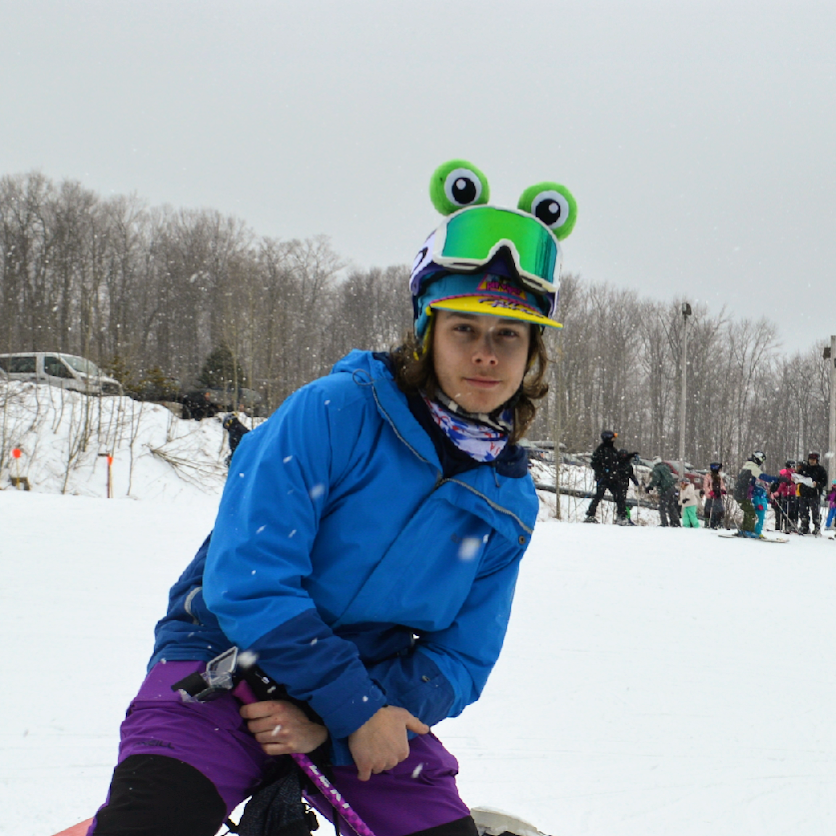
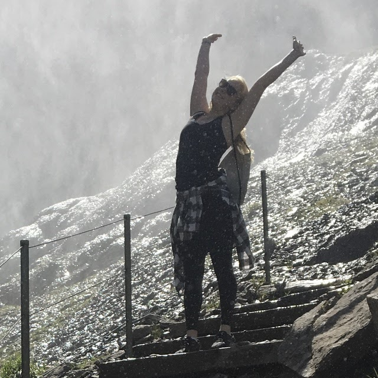
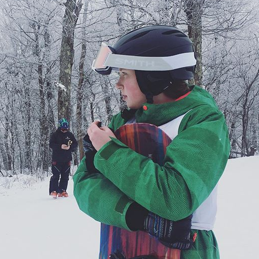
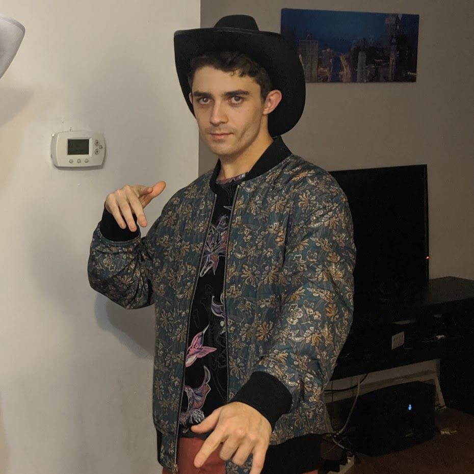
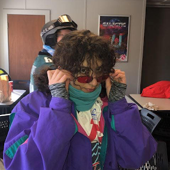
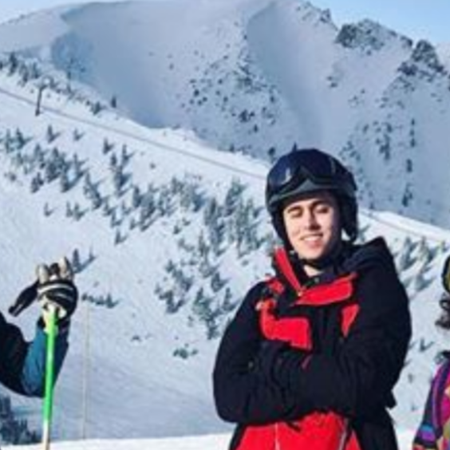
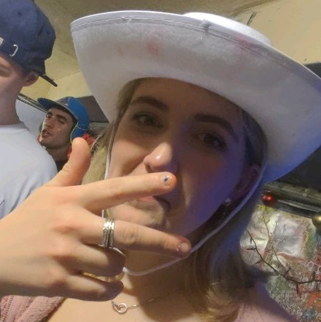

OFFICERS
PRESIDENT

CHRIS FOX
Chris is a Senior studying Mechanical Engineering. He definitely has the most steeze on the team with his helmet frog eyes (pictured) and impeccable dance moves. You can spot him easily since his big red pick up truck tends to be the only Alabama license plate parked at the slopes. He is most excited about ski season so he can cut his hair into a mullet. Beware of the beans and big burritos. BBBB
“Can you follow cam me” “Always take off an accessory before leaving the house, just kidding”
VICE PRESIDENT

SARAH KLEIN
Sarah is a Junior studying Mathematical Economics. While she is proud of her Swedish heritage, don’t ask her to put your MALM© Bed Frame together. Small and mighty, she can go from 100-asleep real fast if there is a table or some arrangement of chairs anywhere in sight. While incredibly dexterous on the moguls and through the chutes, some have likened her jumping ability to that of a uh something that can’t jump.
“My knee is fine it just feels a little mushy and weird” “frank....no” “chris....no” “jack....no”
ALPINE CAPTAIN

BETH BEHUNIAK
Beth is a Junior studying Electrical Engineering. You might think “wow look at this girl wearing this ironic cardigan” but in no way is that cardigan ironic, the elementary school teacher aesthetic is a lifestyle… well other than that one time when she put on all the shirts and jackets lying around the lodge, like someone who packed a little bit too heavily for their Spirit Airlines flight.
“Hiya!” “Welcome to school, kids”
FREESTYLE CAPTAIN

B KARP
B is a Junior studying Science, Technology, and Society. B is an absolute racket and will keep you on your toes, as long as she isn’t keeled over laughing at her own joke. She really has a way with words, to the point that the Freestyle judges let her emcee the event. Her perseverance after repeatedly smashing her ribs into the rails is the reason she’s the only one on the team to have qualified for nationals twice.
“Sometimes when I get really into someone I think about what I would say at their eulogy”
TREASURER

JACK FLAHIVE
Jack is a Senior studying Computer Science. He’s truly the babe of the team, everyone is constantly pining over him. And how could you not? He kiiiinda looks like Timothee Chevrolet. If he ever starts saying anything really seriously, don’t believe what’s coming out of his mouth. Except if he’s talking about eels, that stuff is legit.
“The Holy Spirit is always with me” “I pronounce it flay-hive but in the traditional Irish it would be more like fla-hiev-ey” “Queue up Story of Us, no reason””
SECRETARY
JASPER MACLEAN
Jasper is a sophomore studying Environmental Science and Urban Studies. He’s a gentle giant, good vibes and big smiles only. Outdoorsy to his core (no, like literally… he was named for the National Park), we’re amazed he hasn’t taken the year off to hike the Appalachian Trail.
“Anyone want a hug?”
SOCIAL CHAIR

ZOVI KHRIMIAN
Zovi is a Senior studying Visual Media (to be specific, Sector B: The art and culture of seeing). If you don’t say “dang this girl is artsy” as soon as you meet her, you’ll say it soon enough. As a proud resident of Queens, you can find her roasting people from Westchester County who say they’re from the city. Maybe don’t let her control the aux when you’re driving to the mountain at 7am and she says
“You guys wanna hear some dope new experimental music?”
SOCIAL CHAIR

TOMMY AUSLANDER
Tommy is a Senior studying BBB. He’s the coolest of the officers, but mainly because the rest of us aren’t that cool. If you feel a little out of the lingo that the kids are using these days, feel free to ask him for a refresher. Fastest way to increase the size of your vocabulary, no cap. Putting him on aux is definitely a liability risk cause he might just burn the whole place down.
*smirks* "Sophie is cute"
RECRUITMENT AND MEDIA

SOPHIE AX
Sophie is a Junior studying BBB. She is the sweetest soul and probably the most sociable person on the entire team. Some liken her to a certain mascot of a flavored drink mix since she is really good at knocking down walls to get you to talk about yourself. We love this Arizona gal almost as much as we love her dog Dave (secretly the main reason we let her on the team).
“Tommy is cute”